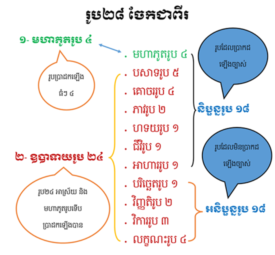

រូបមាន ២៨គឺ

មហាភូតរូប ៤, បសាទរូប ៥, វិសយរូប ៤,
ភាវរូប ២, ហទយរូប ១,
ជីវិរូប ១,
អាហាររូប ១ រួមជានិប្ផន្នរូប ១៨ ។
បរិច្ឆេតរូប ១,
វិញ្ញតិរូប ២,
វិការរូប ៣, និងលក្ខណះរូប ៤ រួមជាអនិប្ផន្នរូប ១០ ។
រូបទាំង ២៨ ចែកជាប្រភេទធំៗមាន ២ គឺ មហាភូតរូប ៤និង
ឧបាទយរូប ២៤ តែបើចែកជាប្រភេទតូចៗ មានរូប ១១ ពួកដូចតទៅនេះ គឺ ៖
១- មហាភូតរូប ៤ បានដល់ បឋវី អាបោ
តេជោ វាយោ
២ -បសាទរូប ៥ បានដល់ ចក្ខុបសាទ សោតបសាទ
ឃានបសាទ ជិវ្ហាបសាទ កាយបសាទ
៣- គោចររូប ឬ វិសយរូប ៤ បានដល់ វណ្ណៈ សទ្ទៈ
គន្ឋៈ រសៈ
៤- ភាវរូប ២ បានដល់ ឥត្ថីភាវៈ បុរិសភាវៈ
៥- ហទយរូប ១ បានដល់ ហទយវត្ថុ
៦- ជីវិតរូប ១ បានដល់ ជីវិតិន្ទ្រយ
៧- អាហាររូប ១ បានដល់ កបឡិង្ការាហារ
៨- បរិច្ឆេទរូប ១ បានដល់ អាកាសធាតុ
៩- វិញ្ញត្តិរូប ២ បានដល់ កាយវិញ្ញត្តិ វចីវិញ្ញត្តិ
១០- វិការរូប ៣ បានដល់ លហុតា មុទុតា កមមញ្ញតា
១១- លក្ខណរូប ៤ បានដល់ ឧបចយៈ សន្តតិ ជរតា អនិច្ចតា